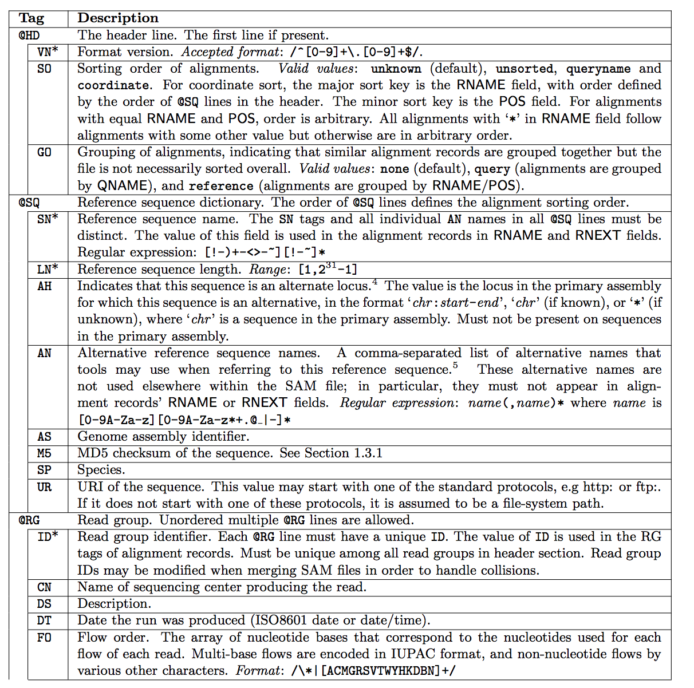
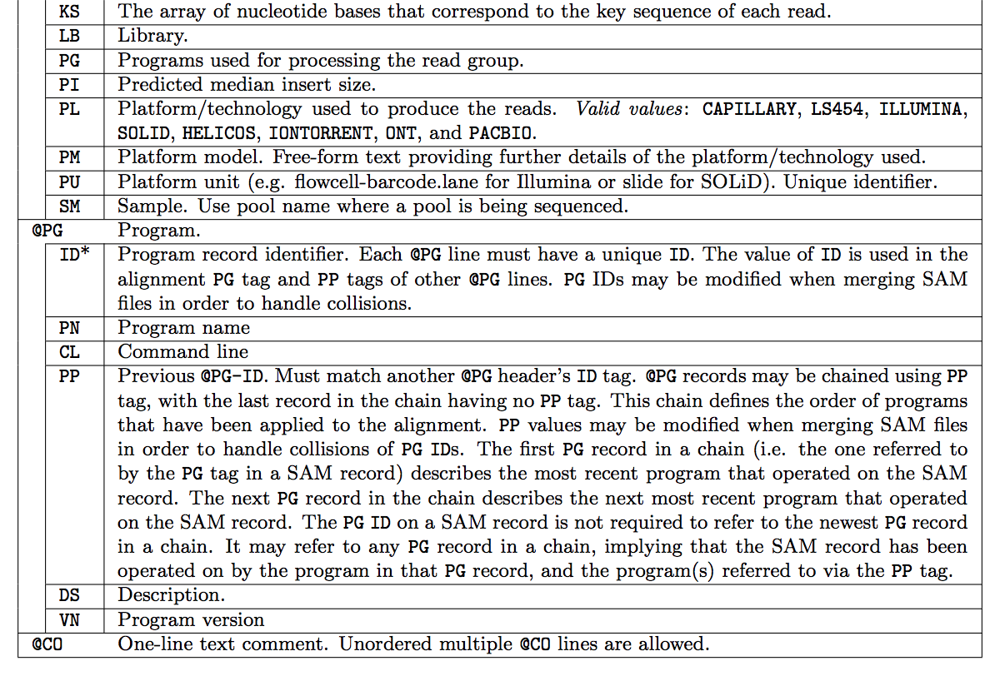
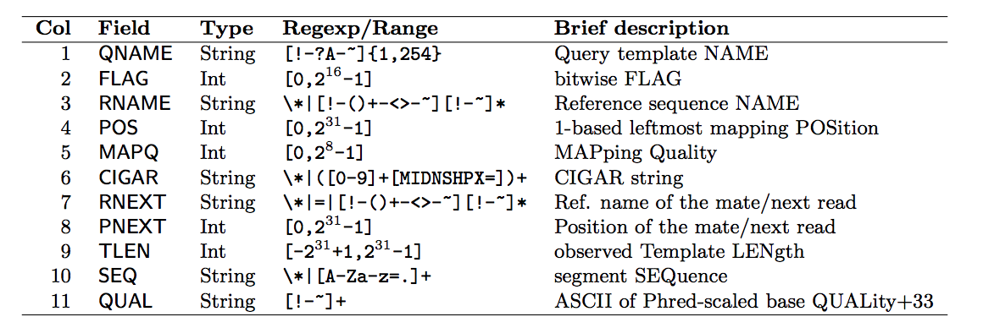
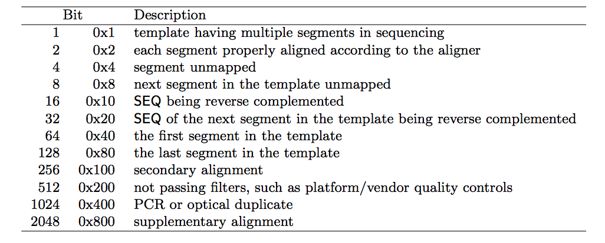
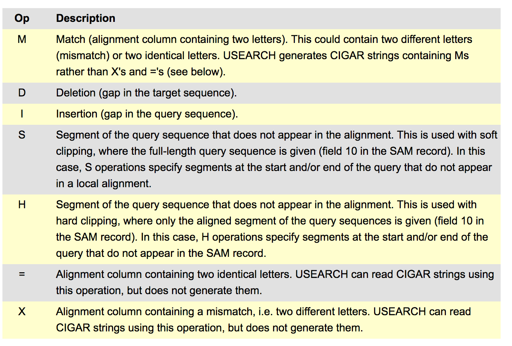
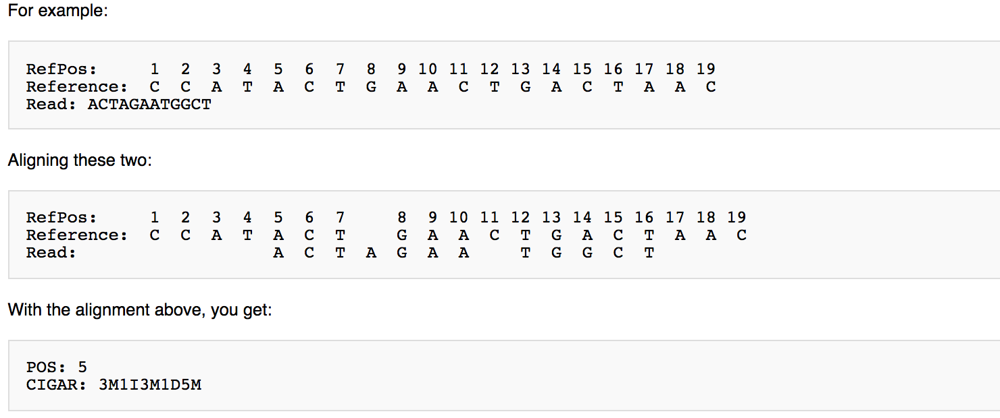

SAM, BAM and CRAM formats
For the full specification, see the SAM/BAM format specification.
Once reads have been aligned to a reference, the alignments are stored in one of three closely related formats. SAM (Sequence Alignment/Map) is the human-readable, tab-delimited text form. BAM is its compressed binary equivalent, and CRAM is a more heavily compressed format that stores alignments relative to a reference to save even more space.
SAM
A SAM file has two parts: an optional header, and the alignment records themselves.
Header
Header lines begin with @ and describe the file: the reference
sequences, the programs that were run, read groups, and so on. Each
header line uses two-letter record type codes and two-letter tags.
{kind=link}

SAM header record types and their tags (part 1). Source: SAM/BAM specification.
{kind=link}

SAM header record types and their tags (part 2). Source: SAM/BAM specification.
Alignment records
Each alignment record has 11 mandatory, tab-separated fields, optionally followed by any number of extra tagged fields.
{kind=link}

The 11 mandatory fields of a SAM alignment record. Source: SAM/BAM specification.
The FLAG field
The second field, FLAG, is a bitwise flag that packs several yes/no properties of the alignment (paired, mapped, reverse strand, and so on) into a single integer.
{kind=link}

The meaning of each bit in the SAM FLAG field. Source: SAM/BAM specification.
Decoding a FLAG value by hand is tedious, so use the Broad Institute’s Explain SAM Flags tool, which converts a flag integer to and from its individual bits.
MapQ
The fifth field, MAPQ, is the mapping quality. Like a Phred base quality,
it is -10 log10 of the probability that the read is mapped to the
wrong position, rounded to the nearest integer. A value of 255 means the
mapping quality is not available.
CIGAR
The sixth field, CIGAR, is a compact string that describes how the read aligns to the reference: which bases match or mismatch, which are inserted or deleted, and which are clipped.
{kind=link}

The CIGAR operations and their meanings. Source: usearch CIGAR documentation.
{kind=link}

A worked example of a CIGAR string. Source: University of Michigan SAM wiki.
Example
A small SAM file with a two-line header and a few alignment records looks like this:
@HD VN:1.5 SO:coordinate
@SQ SN:ref LN:45
HWI-ST865:416 0 ref 7 30 8M2I4M1D3M * 0 0 TTAGATAAAGGATACTG *
HWI-ST865:417 0 ref 9 30 3S6M1P1I4M * 0 0 AAAAGATAAGGATA *
HWI-ST865:418 0 ref 16 30 6M14N5M * 0 0 ATAGCTTCAGC *
BAM
BAM is the compressed binary version of SAM. It contains exactly the same information, but because it is binary it is much smaller and can be indexed for fast random access to any region of the genome. Almost all tools that work with alignments read and write BAM. Common examples are Samtools, Picard, and the Integrative Genomics Viewer (IGV).
CRAM
CRAM compresses alignments even further by storing them relative to the reference sequence, keeping only the differences from the reference rather than the full read sequence. This can dramatically reduce file size, at the cost of needing the reference available to decode the file. For details, see the CRAM format specification.